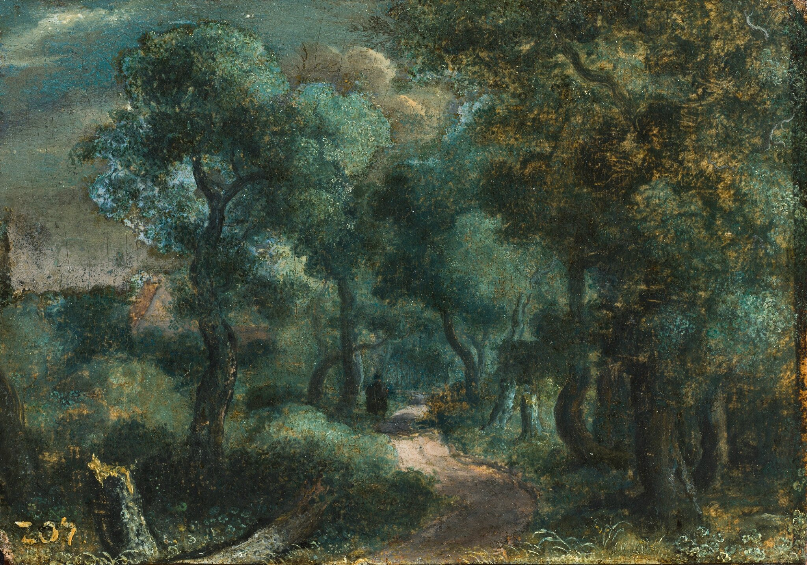

Геркулес Сегерс
Woodland Path (Лесная тропа), около 1618-20

Холст, закреплённый на доске, масло, 16,1 x 22,7 см
Частная коллекция
Его можно назвать предтечей импрессионизма и вообще всех интересных экспериментов с техникой живописи XIX века. Сегерс был живописцем с трагической судьбой: он страдал алкоголизмом и погиб, упав с лестницы и сломав позвоночник. Мастер жил в бедности — в силу своего пристрастия к алкоголю — и при жизни не был до конца признан. Он принадлежит к числу так называемых непризнанных гениев, открывших искусству пейзажа огромные перспективы. Есть даже сведения о том, что Рембрандт купил офорт Сегерса уже после его смерти, когда произведения мастера, как это часто бывает, вдруг начали цениться, и что он позволил себе такую немаленькую трату уже после банкротства. Это свидетельствует об огромной ценности произведений Сегерса для коллеги. Картина «Лесная тропа» написана маслом. Под ней мог подписаться любой мастер конца XIX века —так интересно в цвете взята гамма деревьев и так они написаны пятнами с множеством разных оттенков. Одновременно Сегерс замечательно писал панорамные пейзажи с широким спектром цветовых нюансов. Он же работал в редкой, очень сложной технике цветного офорта. Вот эти два дерева — техника, которая по своей структуре предвосхищает композиционные поиски художников второй половины XIX века. Это был сложный и тонкий по цвету художник, постоянно ищущий новые типы фактуры, новые способы написания деревьев, работающий с крупными тонально разработанными пятнами и светотенью. Сегерс остался непонятым при жизни, однако его профессиональные эксперименты действительно были смелыми и глубокими.